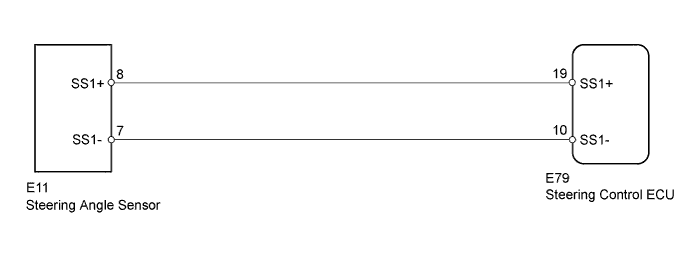
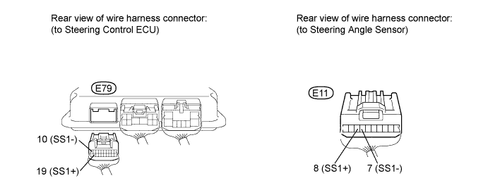
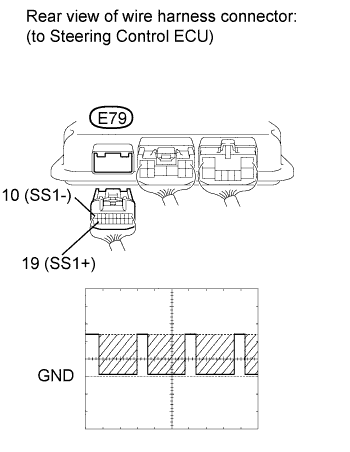

DTC C1595/55 Lost Communication with Steering Angle Sensor Module |
DTC C15C4/68 Steering Angle Signal (Test Mode DTC) |
| DTC Code | DTC Detection Condition | Trouble Area |
| C1595/55 | The steering control ECU detects an error in serial communication between the ECU and steering angle sensor. |
|
| C15C4/68 | A steering signal indicating a tire angle of 36° or more (to the left or right) is input after entering test mode.* |
|

| 1.CHECK HARNESS AND CONNECTOR (STEERING CONTROL ECU - STEERING ANGLE SENSOR) |

Disconnect the E79 steering control ECU connector.
Disconnect the E11 steering angle sensor connector.
Measure the resistance according to the value(s) in the table below.
| Tester Connection | Condition | Specified Condition |
| E79-10 (SS1-) - E11-7 (SS1-) | Always | Below 1 Ω |
| E79-19 (SS1+) - E11-8 (SS1+) | ||
| E79-19 (SS1+) - Body ground | Always | 10 kΩ or higher |
| E79-10 (SS1-) - Body ground | ||
| E79-19 (SS1+) - E79-10 (SS1-) |
|
| ||||
| OK | |
| 2.CHECK STEERING ANGLE SENSOR |
 |
Disconnect the E79 steering control ECU connector.
Move the shift lever to N.
Jack up the vehicle.
Check the waveform of the steering angle sensor using an oscilloscope.
| Tester Connection | Switch Condition | Specified Condition |
| E79-19 (SS1+) - E79-10 (SS1-) | Engine switch on (IG), steering wheel rotated slowly | Pulse generation (0 to 5 V) |
| Result Result | Proceed to |
| NG | A |
| OK (for LHD) | B |
| OK (for RHD) | C |
|
| ||||
|
| ||||
| A | ||
| ||